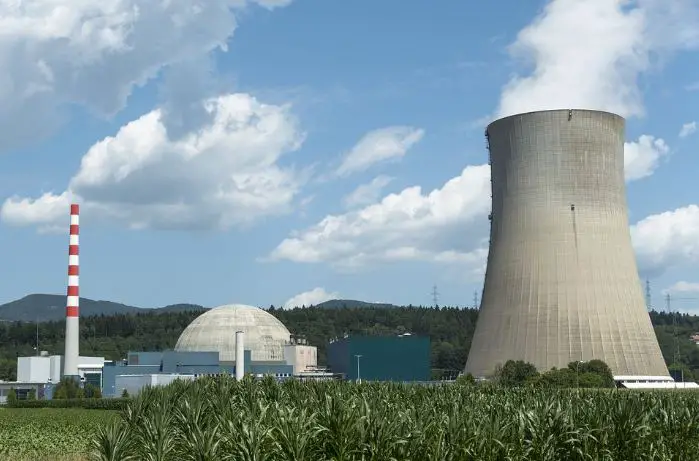
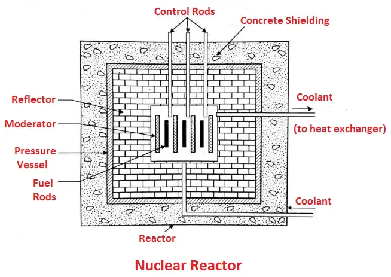
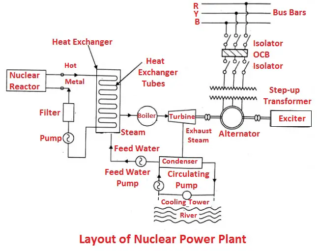

Nuclear Power Plant
The cheap and abundant power is essential to the modern world in the coming years. The rapid increase in industry and living standard of the people creates pressure on conventional sources of power i.e., coal, oil and gas. It is now obvious that these sources will soon be unable to meet the increasing demands of the world.
The adoption of nuclear energy for the generation of power is inevitable to the nations where other sources of generation are inadequate. One of the outstanding facts about nuclear power is a large amount of energy that can be released from a small mass of active material.
Importance of Nuclear Power plant
Despite the higher initial cost of a nuclear plant, the lower fuel cost permits conservation of foreign exchange in the power sector. A large amount of energy can be released from a small mass of active material i.e. the complete fission of one kilo of uranium includes energy equivalent to 3100 tons of coal or 1700 tons of oil. Nearly 1012 tonnes of uranium and thorium is available in the earth crust. The other factors which are in favour of nuclear energy are:
- Lower fuel cost.
- Upgrades the local industry through the use of cheap electric energy.
- Minimises the ecological effects of power generation.
- It does not require any fuel transportation facilities.
- It does not requires large storage facilities.
- Develops national scientific capabilities through national nuclear research developments.
- Develops national scientific capabilities through national nuclear research developments.
- Improves the way of life and makes the people free from burdensome tasks which can be easily performed by electrical energy.
- It has no combustion products and it is a clean source of power which does not contribute to air pollution.
Nuclear Fuels used in Nuclear Power Plant
Following nuclear fuels are used in nuclear power plants:
- Natural uranium
- Enriched uranium
- Thorium
- Plutonium
- Uranium oxide (UO_2)
- Uranium carbide.
- U233
Components of Nuclear Reactor
A nuclear reactor is a device in which nuclear fission is controlled as a self-stabilizing chain reaction. In other words, it is a nuclear furnace which burns fuels like U235, U233 or Pu239 to produce the heat, neutrons and radio-isotopes as shown in the figure.
1. Fuel Rod
The fuels used in reactors are uranium, plutonium and thorium. Among the three uranium and its content are naturally available up to 70% to 90% in the uranium ore and the other two are formed in the nuclear reactor during the fission process. The fuel rods are used to produce the heat, neutrons and radio-isotopes.
2. Moderator
Its main function is to absorb the part of the kinetic energy of the neutrons. The neutrons collide directly with the moderator and thus reduces the kinetic energy of fast neutron to slow neutron. The light water, heavy water and graphite are the most common moderators used in reactors. The moderator is also used to increase the probability of reaction.
3.Reflector
Its main function is to reflect back the escaping neutrons back into the core from the surface of the core. A reflector is usually placed around the core. The neutrons produced in fission process can be absorbed by the fuel itself, a moderator, coolant, and some neutrons may escape from the core without absorption. To reduce the loss of neutrons, the reflector is placed around the core.
4. Coolant
The main function of coolant is to absorb a large amount of heat produced in the reactor. The heat carried by the coolant is used for power generation. If water is used as a coolant, it absorbs the heat and gets converted into steam for power generation.
5. Control Rods
The control rods are used to :
- Start the reactor from the cold.
- For maintaining the chain reaction in a steady-state.
- To shut down the reactor automatically under emergency condition.
The control is necessary to prevent the melting of fuel rods and destruction of the reactor under emergency situation. Cadmium, boron or hafnium are commonly used as a control rod.
6. Shielding
A thermal shielding is provided through steel lining and external shield is be reactor installation to protect the operating provided with concrete surrounding the reactor installation to pro actor walls from radiation damage. personnel from exposure to radiations and reactor walls from radiation damage.
7. Reactor Vessel
It encloses the reactor core, reflector and shield. It also provides entrance and exit passage for coolant. The control rods are passed through a holder from the top of the vessel. The reactor vessel has to withstand a pressure of about 200 bar or more. The reactor core is placed at the bottom of the vessel.
Working of Nuclear Power Plant with Layout
The heat is generated in a reactor by the fission reaction. The coolant in the primary circuit gets heated by absorbing the heat and enters into the heat exchanger. In a heat exchanger, the feed water is heated and converted into steam by the hot coolant by means of heat transfer.
The steam from the heat exchanger enters the turbine and the turbine is connected to the generator which generates power. The steam after doing the work enters into the condenser and converted into the water which is pumped again to the heat exchanger by the feed pump.
The hot coolant gets cooled in heat exchanger is recirculated into the reactor by a coolant circulating pump. This cycle is repeated for continuous generation of power. The generated power is supplied to the distribution line for consumers as shown in the line diagram.